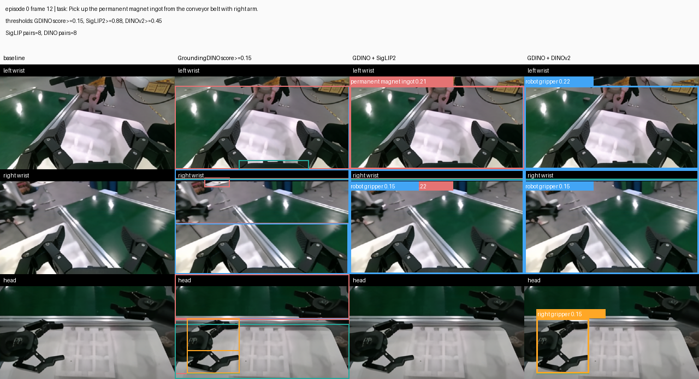
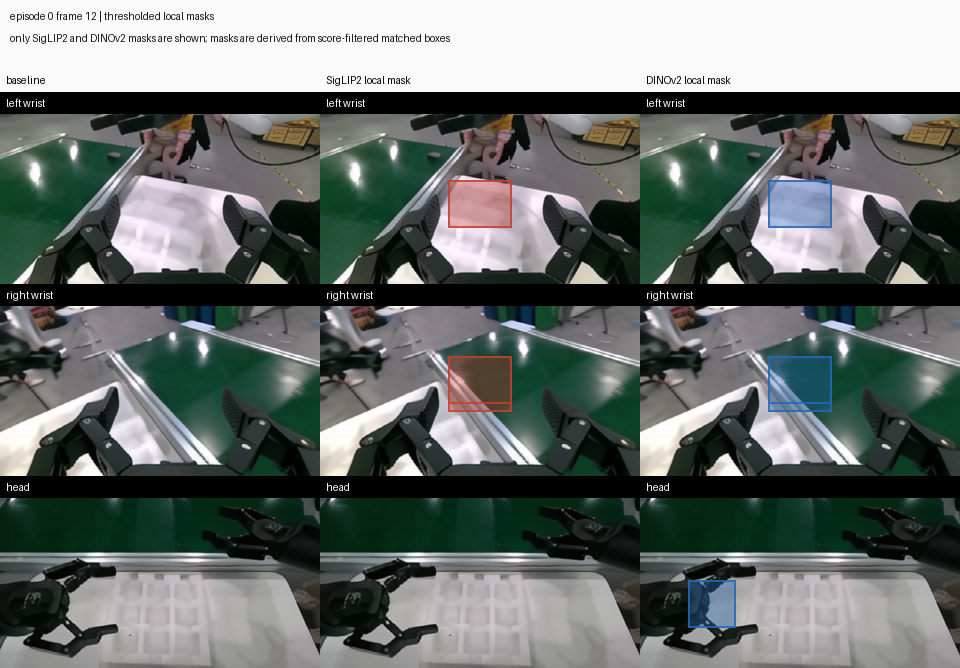

Case 01
Episode 0
Frame 12
Pick up the permanent magnet ingot from the conveyor belt with right arm.
Object spec: permanent magnet ingot (manipulated_object)
Object Spec
permanent magnet ingot
Grounding Prompts Used
permanent magnet ingot, left gripper, right gripper, robot gripper
GroundingDINO
left wrist: 5 / right wrist: 13 / head: 15
Top Matches
SigLIP2: left wrist -> right wrist, 0.934
DINOv2: left wrist -> head, 0.536
Mask Coverage
left wrist: SigLIP2 5.0% / DINOv2 5.0%
right wrist: SigLIP2 5.8% / DINOv2 5.8%
head: SigLIP2 0.0% / DINOv2 3.8%
GroundingDINO proposals + SigLIP2/DINOv2 crop matching
Click image to open the original PNG.

Final local latent mask regions
Columns show baseline, SigLIP2 local mask, and DINOv2 local mask.
